Формы позволяют собирать информацию от посетителей веб-страницы. Списки рассылки, контактные формы и комментарии в блогах являются типичными примерами для небольших ресурсов, но в организациях, которые полагаются на свой веб-сайт для получения дохода, формы являются одной из самых важных частей при разработке.

Формы - это «денежные страницы», благодаря которым интернет-магазины продают свои товары, а онлайн сервисы получают оплату за предоставленные услуги. Многие компании измеряют успех своего веб-сайта эффективностью его форм, потому что они отвечают на такие вопросы, как «сколько потенциальных клиентов наш веб-сайт отправил нашему отделу продаж?» и «сколько людей подписалось на наш продукт на прошлой неделе?». Это часто означает, что формы подвергаются бесконечному рефакторингу, тестированию и оптимизации.

Вёрстка позволяет сделать интерфейс пользователя, то есть размечать и оформлять элементы формы. Изучение обработки данных выходит за рамки вёрстки, т.к. требует знания браузерных языков программирования (курс JavaScript) или серверных языков программирования (курсы PHP, Java, Node.js).

Мы фокусируемся на разметке и оформлении формы, тем не менее иметь базовое понимание её работы будет полезно. При использовании JavaScript, эти атрибуты вообще не используются.
Семантический тег для связывания поля ввода и его описательного текста. При клике по метке, связанное поле получит эффект фокуса. Если поле ввода вкладывается в тег label, связь создаётся браузером автоматически. Пример в форме выше: поле для ввода выделяется при клике по нему.
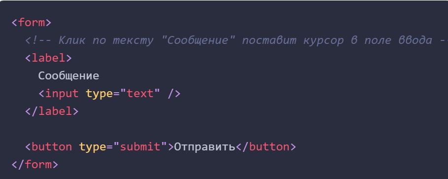Если поле ввода не вкладывается в метку, то необходимо явно связать их через идентификатор поля ввода и атрибут for у метки.
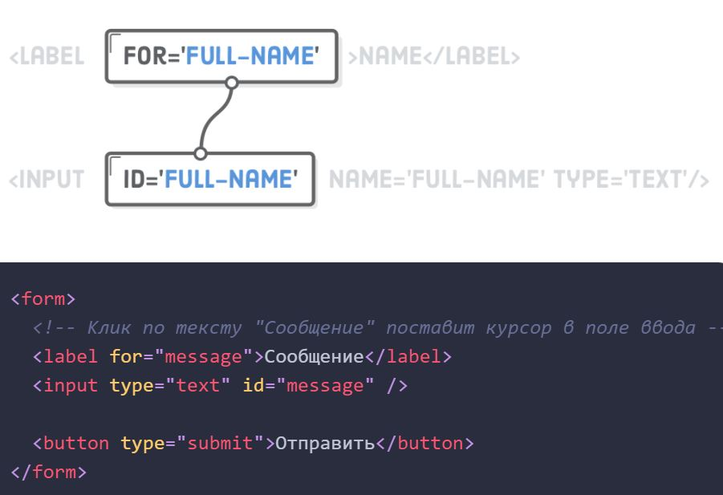Универсальный тег для создания разнообразных полей ввода. Тип поля определяется значением атрибута type, значение которого по умолчанию - text (однострочное текстовое поле).
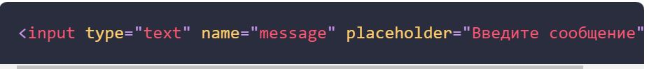Обратите внимание на атрибут placeholder, который позволяет отображать некоторый текст-подсказку о том, какие данные необходимо ввести в поле, когда элемент input пуст. Этот атрибут можно использовать в любом элементе формы, где есть текстовый ввод, например textarea.

Концептуально тег input представляет «переменную», которая отправляется на сервер. Атрибут name определяет имя этой переменной, а значение - это то, что пользователь ввел в текстовое поле. Познакомиться со списком всех доступных атрибутов и значений можно в MDN-документации.
Placeholders in Form Fields Are Harmful - видео о том, как правильно проектировать доступные и лёгкие в использовании элементы форм с метками и подсказками.
Задавая тип email мы получаем автоматическую валидацию от браузера, то есть он сам проверит что пользователь ввёл правильный формат почты. Браузер также может предоставить способ выбрать адрес электронной почты из адресной книги. В случае с password вводимое значение пароля будет визуально подменено на маркеры, из соображений безопасности.
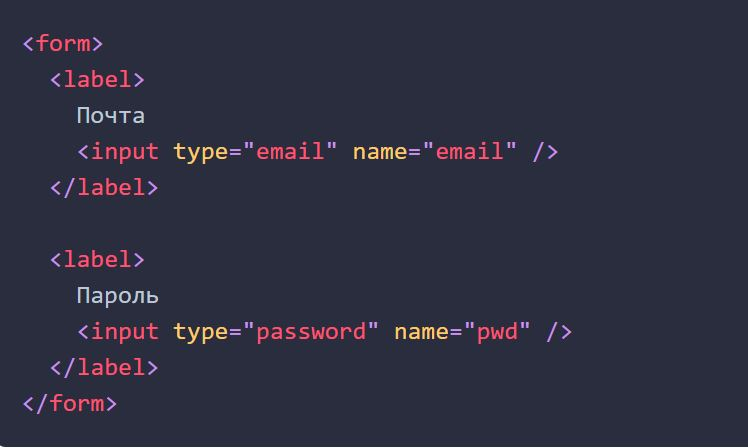Кроме того, сообщая браузерам, что мы ждём ввода адреса электронной почты или пароля, они могут обеспечить более интуитивно понятный пользовательский интерфейс. Например, когда браузер смартфона видит атрибут type="email", он предоставляет пользователю специальную клавиатуру для электронной почты с легко доступным символом @.
Если задать атрибуту type значение radio - инпут превратится в переключатель (радио-кнопку, radio button). Идея радио-кнопок в том, что они всегда идут группами, что позволяет пользователю выбрать одно из множества предопределенных значений.
Это означает, что нам нужна метка для каждой радио-кнопки, но еще и общая обёртка для всей группы кнопок. Семантическая обёртка это тег fieldset. К сожалению из-за ошибки в браузерах его нельзя стилизировать при помощи Flexbox, поэтому для группировки используется тег div со специальным атрибутом role="group".
Выберите цвет футболки:
В отличие от текстовых полей, пользователь не может вводить значения в переключатель, поэтому каждому из них требуется указать значение в атрибуте value. Это значение, которое будет отправлено на сервер, когда пользователь отправит форму.
Очень важно, чтобы у каждого переключателя в одной группе было одно и тоже значение атрибута name, иначе форма не будет знать, что они входят в одну группу.
На последок обратим внимание на новый атрибут checked. Это «логический атрибут», означающий, что он никогда не принимает значение - он либо присутствует, либо не присутсвует в элементе input. Если он установлен на переключателе или чекбоксе, этот элемент будет выбран (отмечен) по умолчанию.
Флажки (чекбоксы, checkbox) похожи на переключатели, но вместо того, чтобы выбирать только одну опцию, они позволяют пользователю выбирать произвольное количество значений.
Чем вы увлекаетесь?:
Чекбоксов может быть целая группа, например выбор хобби, либо только один, например принятие пользовательского соглашения при регистрации.
Обычные текстовые поля принимают буквально всё: цифры, буквы, пробелы, знаки пунктуации и т.п. По этой причине одна из самых распространенных задач проверки - убедиться, что значение является числом в определенном диапазоне. Но при вводе данных в поле типа number браузер автоматически игнорирует все символы, кроме цифр.
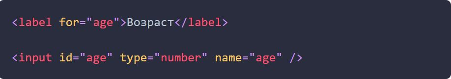Конечно же, есть много чисел, которые не подходят для каждого типа числовых данных. Например, в приведенной выше разметке разрешается ввод слишком больших, либо отрицательных чисел. Эта проблема решается с помощью атрибутов min и max, определяющих границы ввода.
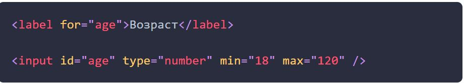По умолчанию числовые поля принимают только целые числа, а дроби, например 30.5 не разрешаются. Это поведение можно изменить с помощью атрибута step, который указывает шаг изменения числа (в большую или меньшую сторону). По умолчанию значение шага равно 1. Например, установив значение step в 0.1, можно вводить такие значения, как 0.1, 0.2 0.3 и т. д. Но при попытке отправвки формы со значением 0.15 и получим всплывающее сообщение об ошибке.
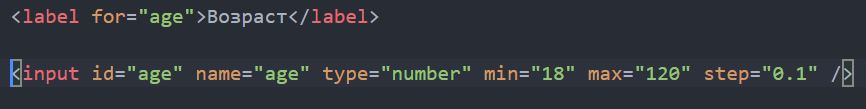Тип tel применяется для обозначения полей ввода телефонных номеров, которые могут быть представлены в самых разных форматах. В настоящее время единственная польза от применения поля типа tel состоит в предоставлении специализированной виртуальной клавиатуры для ввода телефонных номеров на мобильных браузерах, которая содержит цифры, но не буквы.
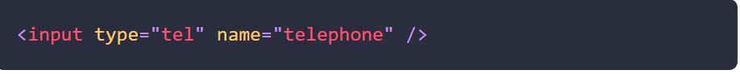Тип range используется для создания ползунков, с целыми и дробными значениями. Также поддерживаются атрибуты min и max для установки диапазона значений.
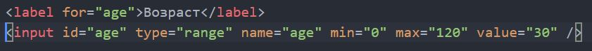Чтобы установить значение, нужно просто перетянуть ползунок в требуемую позицию между минимальным и максимальным значениями. Но браузеры не предоставляют никакой обратной информации об установленном значении. Поэтому для создания обратной связи используется JavaScript и дополнительная разметка.
Для выбора файла или группы файлов, с целью последующей загрузки на сервер (бекенд), используется значение type="file", которое превращает инпут в специальный элемент с кнопкой. При нажатии на кнопку открывается окно проводника для выбора файла.
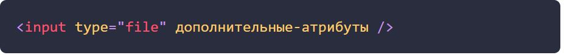Загрузка файла на сервер выполняется посредством языка программирования, например JavaScript.
Стоит уделить особое внимание атрибуту accept. Если его не указывать, тогда добавляются и загружаются файлы любого типа. Наличие атрибута accept позволяет ограничить выбор файла, что особенно важно, когда требуется загрузить только изображение или видео.
В качестве значения выступает MIME-тип, несколько значений разделяются между собой запятой. Также можно использовать следующие ключевые слова:
Создадим поле для загрузки изображения профиля только в формате jpeg и png.
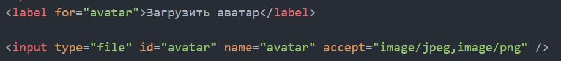Браузеры умеют выводить удобный выпадающий календарь, в котором пользователь может выбрать требуемую дату и/или время. Это не только устраняет неопределенность относительно правильного формата даты, но также запрещает случайно (или нарочно) установить несуществующую дату.
Браузеры также поддерживают атрибуты min и max, которые позволяют установить минимальные и максимальные даты при условии использования правильного формата даты.
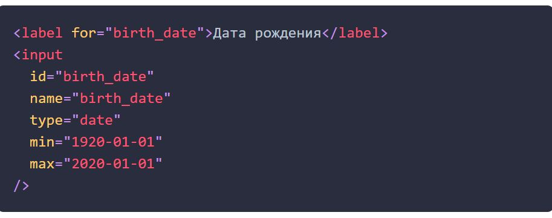В списке ниже перечислены пять форматов (типов инпут) для дат и времени.
Тип color применяется для полей, предназначенных для ввода цвета. Это интересная, но редко используемая возможность, позволяющая посетителю веб-страницы выбирать цвет из выпадающей палитры, похожей на палитру графического редактора. Элементы палитры нельзя дополнительно стилизировать, поэтому используют специальные библиотеки.
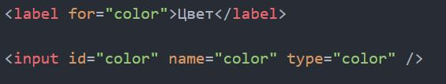Этот тег создаёт многострочное текстовое поле для сбора большого количества текста от пользователя. Например, для обратной связи, комментария, поста в соцсетях, уточнения деталей заказа и т. п.
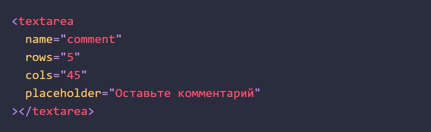Атрибут rows устанавливает количество строк (высоту), а cols - колонок (ширину). На практике указывается только rows, а ширина элемента контролируется через CSS.
Для того чтобы контролировать возможность изменения размера элемента пользователем, в CSS используется свойство resize.
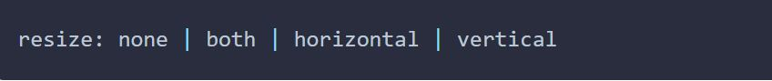Выпадающее меню это альтернатива радио-кнопкам, поскольку оно позволяет выбрать один из многих вариантов. Элемент select это раскрывающееся меню с атрибутом name, которое содержит набор элементов option с атрибутом value, представляющих каждый элемент и его значение.
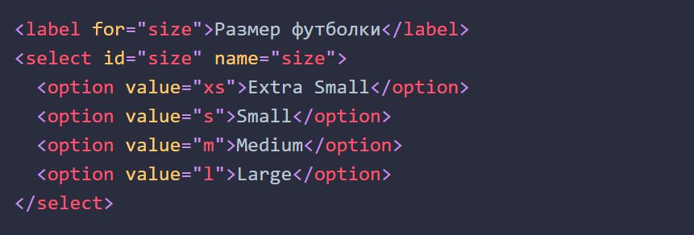Иногда требуется разбить список на отдельные группы, не связанные между собой. Для этих целей есть тег optgroup. Чтобы добавить заголовок группы, используется атрибут label.
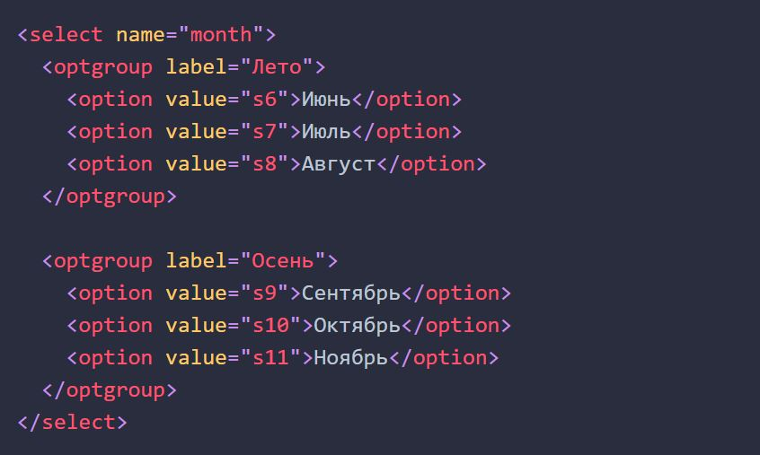Автозаполнение - это патерн (приём), с которым знакомы все пользователи. При вводе символов в текстовое поле, поисковая система предлагает различные варианты автозаполения. При наборе нового сообщения электронной почты, почтовый клиент предлагает список получателей и т. д.
Тег datalist создает список предопределённых значений, которые можно выбирать при наборе в связанном текстовом поле. Изначально этот список скрыт и становится доступным при получении инпутом фокуса и наборе текста в нём.
Список, создаваемый тегом datalist, связывается с текстовым полем через атрибут id. Его значение должно совпадать со значением атрибута list тега input.
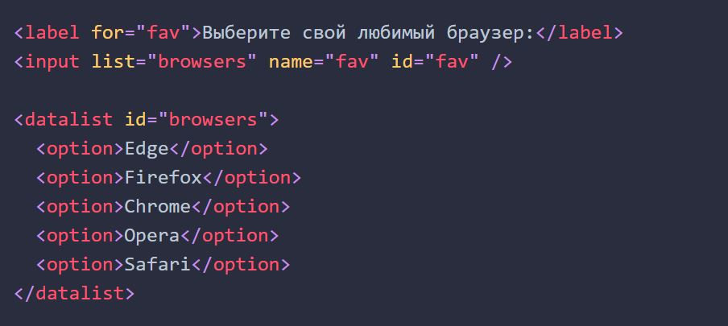Элементы option также могут иметь атрибут value. Это полезно, когда текст опции и желаемое значение не совпадают. Например при вводе номера почтового отделения по району города.
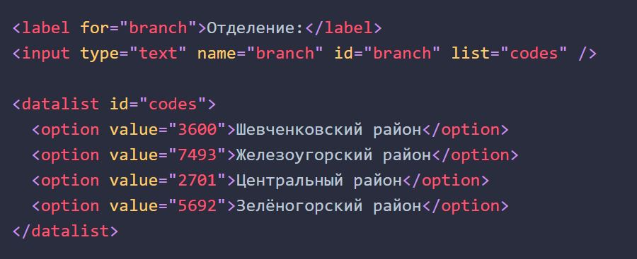Здесь пользователь увидит список районов с их кодами, а при выборе опции, текстовое поле будет заполнено только кодом отделения.
При создании тега form внутри него автоматически появляется атрибут action. Он нужен для того, чтобы отправлять файл с формой, в котором будут с помощью PHP собраны нужные данные с формы. Нам в данном случае он не нужен т.к. мы отправляем форму через JavaScript.
Форма это логический (Семантический) контейнер для группировки различных элементов с какой-то одной целью. Например фильтры слева на странице интернет-магазина - это тоже форма.
Тег input это универсальное поле для ввода данных. Его атрибут name подскажет серверу категорию информации из этого поля.
Т.е. если в поле должна вписаться фамилия, то атрибуту name надо задать значение типа surname.
А для того чтобы при клике на имя поля, в нём появлялся курсор, надо перед input вставить имя поля в тег label.
В теге label указать атрибут for="id нужного поля", а полю соответственно задать id.
Можно вложить input прямо в label, тогда связывание произойдет автоматически и будет НЕ НУЖЕН атрибут for.
НО! При выполнении сложных эффектов (типа переходов) input обычно НЕ ВКЛАДЫВАЕТСЯ внутрь label, для удобства работы с тегом.
Для отправки формы создается тег button с атрибутом type="submit".
При создании input type="checkbox" внутри тега надо обязательно указывать атрибут value, который обозначает значение данного чекбокса.
Если есть группа чекбоксов, из которых можно выбрать сразу несколько, то атрибут name у них должен быть одинковый. Чтобы сервер получал их значения в одной категории и смотрел на это как на группу данных, а не просто разные данные.
Чтобы все чекбоксы обернуть в семантический тег, надо обернуть их в тег fieldset. Только на него не работают флексбоксы.
Поэтому вместо fieldset используется div.
А чтобы посысить семантику этого div к нему применяется атрибут role.
ROLE ИСПОЛЬЗУЕТСЯ ТОЛЬКО ДЛЯ ПОВЫШЕНИЯ СЕМАНТИЧНОСТИ, ДЛЯ НЕ СЕМАНТИЧЕСКОЙ РАЗМЕТКИ. Не надо пихать его везде где попало.
В случае с группой чекбоксов role="group". Логично.
Для радио-кнопок (это когда можно выбрать только один из предложенных вариантов) тоже обязательно надо задавать атрибут value.
Для них нужно обязательно указывать одинаковый name. Иначе можно будет выбрать несколько позиций.
Атрибут checked. Если его поставить внутрь тега с чекбоксом или радио-кнопкой, то при загрузке страницы данное значение будет автоматически отражено.
Для группировки радио-кнопок также используется div role="group".
Для ввода данных о дате и времени для input используются атрибуты:
Можно сделать так, чтобы при загрузке страницы с формой курсор автоматически появлялся в каком-то из полей. Например в первом.
Для этого есть атрибут autofocus. Его можно поставить на любое поле.
Существует атрибут autocomplete. Он нужен для того, чтобы форма предлагала варианты для заполнения полей.
Например если автозаполнение не нужно, то в тег form надо указать autocomplete="off".
После чего его можно отдельно включить на каком-либо из input с помощью autocomplete="on".
Атрибут placeholder нужен для того, чтобы вставлять в поле полупрозрачную подсказку у том, как его заполнять.
Например в поле с именем сделать подсказку "Иван Иваныч".
Лучше не вкладывать значение label в placeholder. Лучше label оставлять отдельно, чтобы его было видно всегда.
В placeholder вписывается именно формат ввода, а не значение.
Пример формы регистрации спискера.
Для оформления формы каждая пара label и input оборачивается например тегом p.
Также для этого можно использовать ul списки.
Но мы будем использовать div.